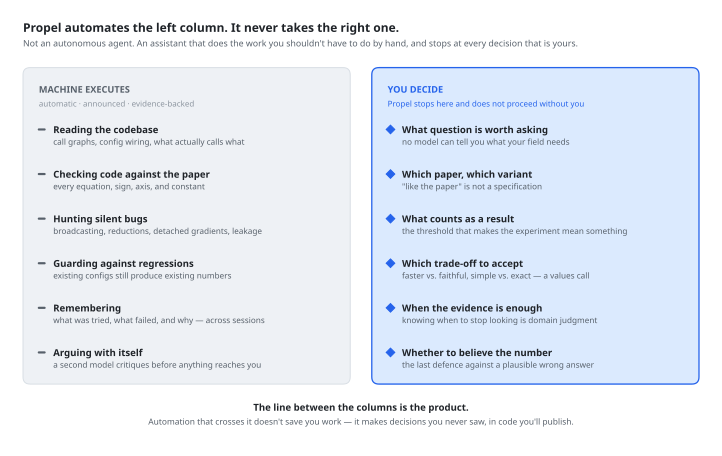
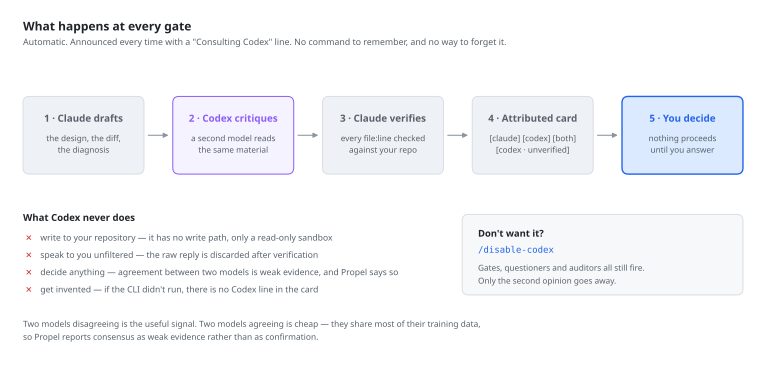

Propel
Not an autonomous agent. A research coding assistant. Propel automates the tedious half of research engineering — tracing code, checking implementations against the paper, hunting silent bugs, remembering what already failed. It stops at every decision that is actually yours. You decide; the machines execute.
Overview
Propel is not an autonomous agent, and it is not trying to become one. It does not choose your research question, run experiments unattended, or decide what counts as a result. It automates the dirty work — reading the codebase, tracing data flow, checking every equation against the paper, hunting the bugs that don't crash, remembering what failed last month — and then it stops and asks you the questions only you can answer.
That split is deliberate, because it tracks what the technology is actually good at. Machines are excellent at the mechanical, repetitive, easily-botched work that researchers do badly precisely because it is boring. They are bad at judgment: what question is worth asking, which variant of the method matters, what threshold makes a result mean something, whether to believe a number. Automation that crosses that line doesn't save you work — it makes decisions you never saw, in code you will publish.
The reason structure is needed at all is that an unconstrained LLM writes the mean of its training data. Ask it to "add a diffusion policy head" and you get a blend of every diffusion codebase it has seen: a cosine noise schedule from one repo, ε-prediction from another, an EMA decay from a third. The code runs and may even train, but it is not the variant your paper describes. This matters most in research code, where mistakes are quiet: a broadcasting bug in a loss function doesn't crash, it just gives you a training run whose numbers are wrong — and a plot you believe.
Who Decides What
Every capability Propel adds falls on one side of a line. On the left, work that a machine does identically every time and a tired researcher does not. On the right, decisions that determine whether the experiment means anything.

The line between the columns is the product. An agent that crosses it is not more helpful — it is less auditable.
This is why Propel's gates are not a speed bump on the way to autonomy. They are the point. The framework is built so that the mechanical work happens without you having to ask for it, and the judgment calls cannot happen without you.
The Pipeline
Propel enforces five human-in-the-loop gates, two questioner checkpoints, automatic auditor dispatch after every code change, and an automatic second-model consult at every gate. Investigation happens before implementation, design decisions are explicit, and silent bugs are caught before they reach training. Each retrospective feeds a working memory of past experiments and designs that is loaded into the next session, so the agent checks what was already tried before proposing it again.

At each gate, the agent stops and asks structured questions that reveal design assumptions — never "shall I proceed?" but "should we [A] or [B]? A means [trade-off], B means [trade-off]." The questioners (Q0, Q1) ground the work in concrete reference implementations and specific implementation details before the agent acts.
Two Models at Every Decision
A model reviewing its own plan is a model grading its own homework. Propel consults a second model — OpenAI Codex — automatically, at every major decision point. There is no command to invoke and nothing to remember. A second opinion you have to request is one you get only when you already suspect you need it, which is the opposite of when it helps.

Claude writes a short brief, a codex-bridge subagent runs the consult in an isolated context, and every file:line Codex cites is checked against your actual repository before you see it. Codex hallucinates paths and line numbers; that verification step is what makes its genuinely-good findings usable. Anything that cannot be confirmed is labelled [codex · unverified] — never promoted to a finding, never silently dropped.
Claude says so every time, with a ◆ Consulting Codex line naming the question being sent, and every finding in the resulting card is tagged [claude], [codex], [both] or [codex · unverified]. You can always tell which model said what — a blended voice would destroy the entire point of having two.
Where it fires
Gate 0 scope, Gate 1 findings, Gate 2 design, Gate 3 audit, Gate 4 diagnosis, bug classification, 3-strike breaks, and retrospective conclusions. Not on trivia — over-firing turns the announcement into noise, which is worse than not firing at all.
What it never does
Write to your repository. Speak to you unfiltered. Decide anything. Get invented — if the CLI did not run, there is no Codex line in the card, and Propel says it ran single-model.
Agreement is weak evidence
Two models trained on overlapping internet text agreeing means little, and Propel reports it that way rather than dressing consensus up as confirmation. The disagreements are what deserve your attention.
Don't want it? /disable-codex turns the layer off for the project. Gates, questioners and auditors all still fire — only the second opinion goes away. A missing or unauthenticated Codex never blocks a gate: Propel says so once and continues single-model.
Four Modes — selected automatically
Not every session needs the full pipeline, so Propel filters which skills and gates are active. You do not choose the mode. The agent reads your first message, picks one, and says which and why in a single line — then switches again on its own when the work crosses a boundary. Asking someone to classify their own problem before they have started working on it is exactly the kind of friction Propel exists to remove.

/switch overrides it whenever you disagree.Researcher
Literature, investigation, deep research. Picked when the question is about the problem space rather than the code.
Engineer
Full pipeline with every auditor. Picked when there is something to build — and when the request is ambiguous, since it filters nothing out by mistake.
Debugger
Root-cause analysis with evidence-backed classification. Picked when there is a specific wrong behavior to explain.
Trainer
Launch, monitor, and fix CUDA/OOM/path errors. Picked when the code is settled and the problem is execution.
Crossing a boundary switches the mode rather than refusing the request. Ask a Trainer-mode session to change a loss function and it moves to Engineer — and tells you why: that change alters what the run measures, so it needs the design and audit path, not a runtime patch. The mode boundary exists to make sure the right gates fire, not to withhold capability. A narrower mode runs fewer gates; it never lowers the bar at the ones it runs.
What Runs Without You Asking
A framework that requires you to remember a command before investigating, or a flag before wanting a second opinion, has moved the cognitive load it was supposed to remove. In Propel, you describe the problem. Everything mechanical dispatches itself — and narrates what it did, so nothing happens invisibly.
| Trigger | What fires, automatically |
|---|---|
| Your first message | Mode selection, announced in one line with its reason |
| A new task | Gate 0 scoping questions, one at a time, then Q0 grounding |
| A question needing several files traced | Several investigator subagents in parallel, one question each |
| Any gate about to be presented | A Codex consult via codex-bridge, verified against the repo |
| An approved plan | implementer then spec-reviewer, one component at a time |
| Any source edit | A hook names the required auditors — the dispatch is deterministic, not remembered |
| An approved training command | trainer-operator, which keeps thousands of log lines out of your session |
| Three failed attempts | The 3-strike break: stop, and ask what assumption all three share |
Process is the agent's to decide. Research is yours. If the agent catches itself writing "you can run X if you want", it should just run X.
Twenty skills and thirteen subagents sit behind that table. You never name one — but if you want to see exactly what exists and what triggers it, the full references are in the documentation: all skills, by category, with triggers and the modes each is active in · all agents, split into read-only auditors and the workers that do the building.
See It In Action
Each mode shapes how the agent interacts with you. Watch simulated sessions for each mode.
When Would I Use This?
Three real-world starting points and how Propel guides you through each one.
“I have an idea and a reference codebase”
You know what you want to build. You have a reference implementation or paper to follow. You need to adapt it to your architecture and constraints.
scratch/ README, identifies what needs adapting vs. what can be reused directly.“I inherited a codebase and need to understand it, then extend it”
Your teammate's project, a previous experiment, or an open-source repo. It generally works but you need to understand how before adding your features.
scratch/ investigation README that persists across sessions.“Something is wrong and I need to find the real cause”
Training diverges, outputs look wrong, or a refactor broke something. You need to find the root cause — not just patch symptoms. Could be a code bug, a design flaw, or a config issue.
Get Started
git clone https://github.com/KevinBian107/propel.git
cd propel
pipx install -e . # or: uv tool install -e .
propel # opens the setup console
pipx (or uv tool) is the reliable route — it puts propel on your PATH in its own environment, and the editable install means repo edits take effect immediately. Plain pip install -e . works inside an activated virtualenv or conda env, but against a Homebrew or system Python it fails with externally-managed-environment and leaves you without the command.
Running propel with no arguments opens a local setup page in your browser. It detects Claude Code, Codex, Node and git, installs whatever is missing with one click, opens a real terminal for the two logins that genuinely need one, and installs Propel into your project. It runs entirely on 127.0.0.1 behind a per-process token, and it can only run a fixed list of setup commands — nothing leaves your machine except the installers you click.
Prefer the command line? cd into your project and run propel init.
Then start claude and just describe what you're working on. Propel picks a mode, fires Gate 0, and tells you what it's doing. You never have to name a skill, an agent, or a model. Run /intro if you'd rather see the full tour first, and see the Getting Started guide for a complete walkthrough.
What You Bring to the Gates
Propel's constraints are necessary but not sufficient. Automating the mechanical half only pays off if the judgment half actually happens — and that half is yours. The framework guarantees the agent will stop and ask; the quality of the output depends entirely on what you bring when it does:
| Your Input | Why It Matters |
|---|---|
| Research question | Not "implement X" but "test whether X improves Y under condition Z." The more specific, the less the agent guesses. |
| Hypothesis | What do you expect and why? This is what auditors verify against. |
| Method | Which paper, which equations, which algorithmic choices. The agent cannot infer "use stop-gradient on the codebook as in Section 3.2." |
| Domain knowledge | Pitfalls not in any paper, configs that silently fail, things that only work in your setup. |
Acknowledgments
Propel combines ideas from multiple sources:
- obra/superpowers — Plugin architecture, discipline enforcement, verification gates, micro-task planning.
- scott-yj-yang/new-prompt — Session management CLI, auto-detection of project root, investigation artifact linking.
- Talmo's sleap-io — Investigation skill template with structured scratch/ patterns and living READMEs.
- Sionic AI's experiment registry — Retrospective skill and experiment learning workflow.
- brunoasm's claude skills — Think-deeply anti-sycophancy skill and PDF extraction.
- Weizhena's Deep-Research — Structured literature review with human-in-the-loop checkpoints.
- Context Engineering Template — Basic Claude Code usage patterns and context engineering principles.
- ChenLiu-1996/figures4papers — Figure repository structure and publication-style conventions. Every figure on this site is generated by a script in
figures/, one folder per figure, regenerated withpython figures/make_all.py.